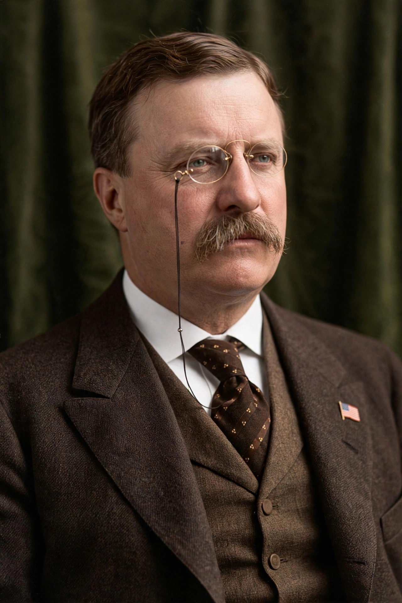

Theodore Roosevelt Jr. (October 27, 1858 – January 6, 1919) was an American statesman, politician, conservationist, naturalist, and writer who served as the 26th president of the United States from 1901 to 1909. He previously served as vice president under William McKinley, as governor of New York, and as a U.S. civil service commissioner, and he led the Rough Riders during the Spanish–American War.
Succeeding to the presidency on McKinley's assassination in September 1901, Roosevelt became, at 42, the youngest president in American history. His domestic programme, the "Square Deal", centred on consumer protection, control of corporations, and conservation. His administration revived the Sherman Antitrust Act (notably in Northern Securities Co. v. United States, 1904), intervened in the 1902 coal strike, and secured the Pure Food and Drug Act and Meat Inspection Act of 1906. A pioneering conservationist, he established five national parks, 18 national monuments, and some 150 national forests, placing roughly 230 million acres under public protection.
Roosevelt pursued a policy summed up in the phrase "speak softly and carry a big stick". He oversaw the acquisition of the Panama Canal Zone and the start of canal construction, issued the Roosevelt Corollary to the Monroe Doctrine, mediated the end of the Russo-Japanese War — for which he received the Nobel Peace Prize in 1906, the first American so honoured — and sent the Great White Fleet on a world voyage.
Dissatisfied with his successor William Howard Taft, Roosevelt ran for president again in 1912 on the Progressive ("Bull Moose") ticket, splitting the Republican vote and finishing second. He survived an assassination attempt during that campaign. A prolific author and explorer, he died in 1919 at his home, Sagamore Hill, New York. He is depicted on Mount Rushmore and is consistently ranked by historians among the greatest American presidents.
See also: Progressive Era · Square Deal · Rough Riders